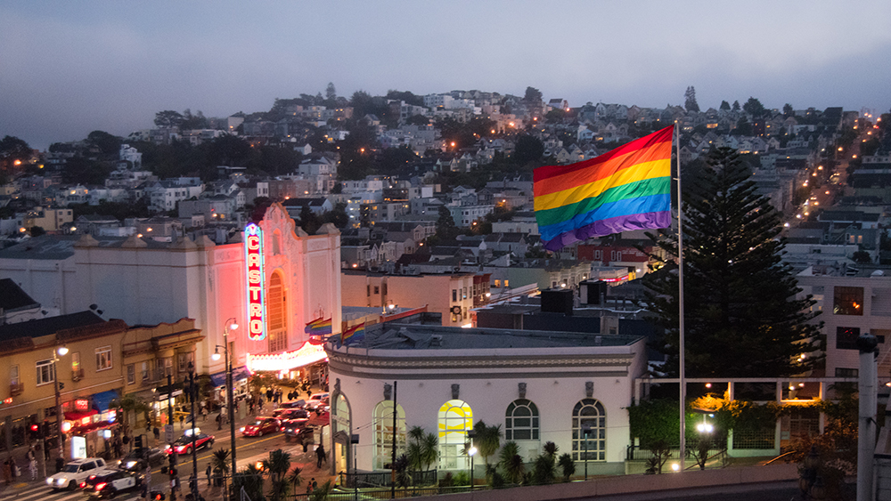
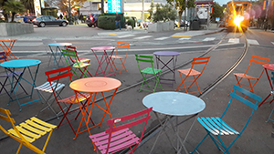

the castro
 The Castro is the name of the neighborhood I live in. You can’t miss it because of the giant rainbow flag that flies at the corner of Castro Streets and Market Streets above the Harvey Milk Plaza Castro MUNI Station.
My neighborhood has changed a lot over the 20+ years I’ve lived here. Not only in who lives here – evolving from the sexual revolution days into the AIDS crisis years and on into the first dot com economy to the age we live in now where Undetectable=Untransmitable and the second tech wave bringing ride hailing cars at every turn, short term rental housing units and ride share bicycle stations every time I turn around.
And families. Lots of families. And not just hetro families. Lots of dads with kids. It’s actually kind of cool to walk down the street and see 2 dads taking their kids around the neighborhood. It can be a bit awkward sometimes, posters for circuit parties, drag shows and dildos and sex toys in the window displays, but it’s all part of the fabric of life here. Not to mention the occasional “naked” person – now required to cover their junk with something – usually a sparkley bit.
The City has really gayed up the place. The sidewalks got widened. We got rainbow escalators at the MUNI station and rainbow crosswalks at Ground Zero (the term for the center of the outbreak of the AIDS epidemic at 18th and Castro) and the Rainbow Honor Walk – bronze plaques set into the sidewalks honoring famous LGBTQ individuals thru history.
People come from around the world to see Harvey Milk’s camera shop and the gayborhood. Sometimes I play “guess that language” with the different groups of tourists that come thru. It’s my home where I go to the grocery store, the pharmacy, my Doctor and therapist and mental health care. Birthdays, holidays and memorials with my chosen family at restaurants and churches and rec centers. Some say it’s a bubble – but it’s our bubble.